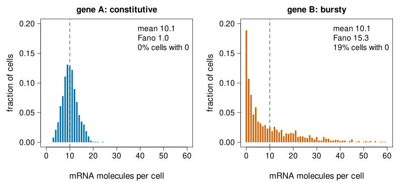
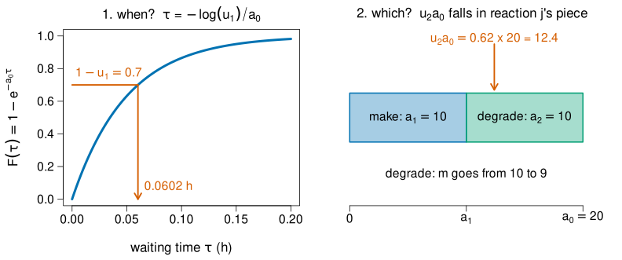
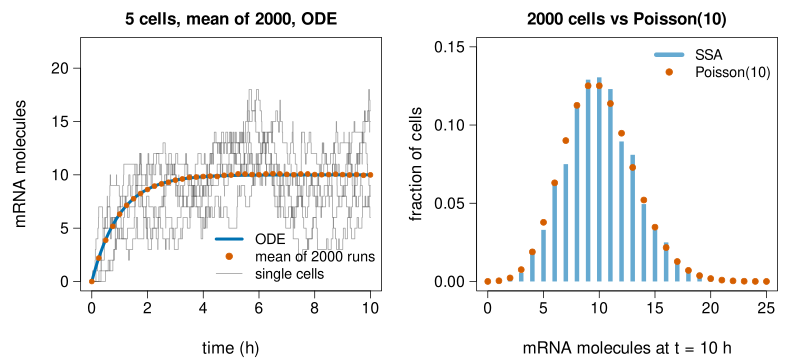
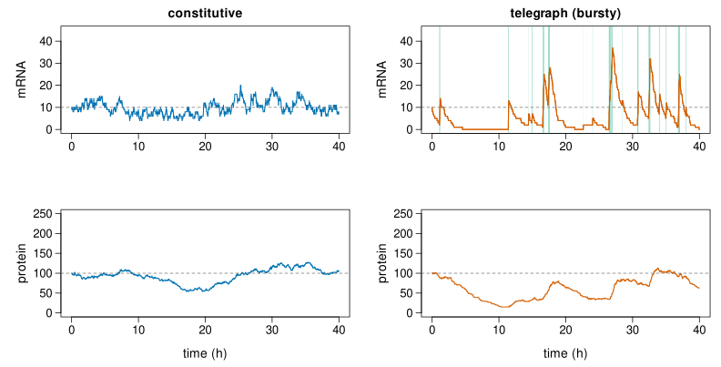
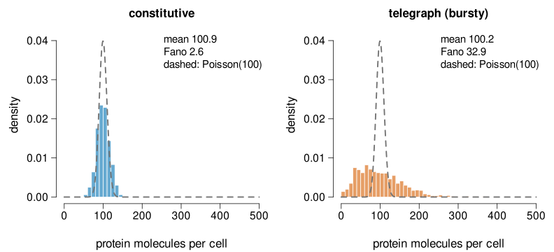

Stochastic simulation
Part 8 — Ordinary differential equations
About this lecture
So far in Part 8 a model was an ODE: one smooth curve, the same in every cell. With 10 mRNA molecules per cell that picture breaks.
- When copy numbers are small, reactions are random events. Each has a propensity: its probability per unit time.
- The chemical master equation describes the probabilities of all states, but it is far too large to solve. We sample it instead.
- Gillespie’s algorithm (the SSA): draw when the next reaction happens (an exponential waiting time) and which one it is (in proportion to its propensity). Exact, and 10 lines of code.
- Many runs give a distribution. Its mean is compared with the ODE; its spread is the biology.
- When the SSA is too slow: tau-leaping, and Euler–Maruyama for stochastic differential equations, each with its failure.
- Biology: transcriptional bursting and the cell-to-cell variability it causes; the Fano factor.
Recap: the mRNA ODE
The mRNA model m' = \alpha - \delta m of Initial value problems and Euler’s method, with the transcription rate now called k. There \alpha = 10 per minute, \delta = 0.2 per minute (50 molecules); here a weaker gene, time in hours:
m'(t) = k - \delta\, m, \qquad m(0) = 0 \quad\Rightarrow\quad m(t) = \frac{k}{\delta}\left(1 - e^{-\delta t}\right).
| value | meaning | |
|---|---|---|
| k | 10 per hour | transcription rate |
| \delta | 1 per hour | degradation rate per molecule (mean lifetime 1 h) |
| k/\delta | 10 molecules | steady state |
- The ODE says: every cell reaches exactly 10.0 molecules after a few hours, and stays there.
- A single-molecule FISH (smFISH) experiment counts mRNA in single cells. Do all cells have 10?
A biology problem first: two genes, same mean

- Two genes, both with a mean of 10 mRNA per cell. Gene A: a narrow peak. Gene B: one cell in five has none, a few have 40+.
- The ODE gives the same answer, 10, for both. It cannot tell them apart.
When copy numbers are small, the ODE is not enough

- The same model, scaled by its steady state. With 10 molecules, single cells fluctuate by \pm 30\%; with 1000, by \pm 3\%.
- The relative fluctuation is about 1/\sqrt{\text{mean}}: 1/\sqrt{10} = 0.32, 1/\sqrt{1000} = 0.032.
Reactions as random events
A reaction j has a propensity a_j(\mathbf x): in a short time dt it happens with probability a_j(\mathbf x)\,dt. It changes the state \mathbf x by a fixed stoichiometry vector.
| reaction | propensity a_j | change (m, p) | at (m, p) = (10, 100) | |
|---|---|---|---|---|
| transcription | \varnothing \to M | k = 10 | (+1, 0) | 10 per h |
| mRNA decay | M \to \varnothing | \delta_m m = 1 \cdot m | (-1, 0) | 10 per h |
| translation | M \to M + P | k_p m = 2\, m | (0, +1) | 20 per h |
| protein decay | P \to \varnothing | \delta_p p = 0.2\, p | (0, -1) | 20 per h |
- Total propensity a_0 = \sum_j a_j = 60 per hour: a reaction every minute on average.
- The ODE uses the same rates: m' = k - \delta_m m, p' = k_p m - \delta_p p, i.e. (change vectors) × (propensities).
The chemical master equation, in words
P_n(t) = probability that a cell has n mRNA molecules at time t. Probability flows into state n from n-1 (a molecule made) and n+1 (one degraded), and out of n by any reaction:
\frac{dP_n}{dt} = \underbrace{k\,P_{n-1} + \delta\,(n+1)\,P_{n+1}}_{\text{in}} - \underbrace{(k + \delta n)\,P_n}_{\text{out}}.
For n = 3: \;P_3' = 10\,P_2 + 4\,P_4 - 13\,P_3.
- A linear ODE system, one equation per state. Its steady state here is Poisson(10).
- But one equation per state: (promoter, mRNA ≤ 100, protein ≤ 500) has 2 \cdot 101 \cdot 501 \approx 10^5 states; an epidemic in 10 000 people about 5 \cdot 10^7.
- So we do not solve the master equation; we sample from it, one cell at a time.
Gillespie’s idea: two questions per step

- When? With total propensity a_0, the waiting time is exponential with rate a_0: inverse transform \tau = -\log(u_1)/a_0.
- Which? Reaction j with probability a_j/a_0: cut [0, a_0) into pieces of length a_j, see where u_2 a_0 falls.
One step by hand
State m = 10: a_1 = k = 10 (make), a_2 = \delta m = 10 (degrade), a_0 = 20 per hour.
| uniform | computation | result | |
|---|---|---|---|
| when? | u_1 = 0.3 | \tau = -\log(0.3)/20 = 1.204/20 | 0.0602 h (3.6 min) |
| which? | u_2 = 0.62 | u_2 a_0 = 12.4 \ge a_1 = 10 | degrade: m \to 9 |
Next step: a = (10, 9), a_0 = 19; with u_1 = 0.9, u_2 = 0.2: \tau = 0.105/19 = 0.0055 h; 0.2 \cdot 19 = 3.8 < 10: make, m \to 10.
- The time advances by random, unequal steps, one reaction per step. There is no step size h to choose.
- Mean waiting time 1/a_0: 3 minutes here. A busier cell takes more, smaller steps.
Gillespie’s algorithm in R
k <- 10; delta <- 1 # per hour: transcription, mRNA decay
set.seed(1)
t <- 0; m <- 0; tt <- 0; mm <- 0 # no mRNA at t = 0
while (t < 10) {
a <- c(k, delta * m); a0 <- sum(a) # propensities: make, degrade
t <- t - log(runif(1)) / a0 # 1. when? waiting time ~ Exp(a0)
m <- m + if (runif(1) * a0 < a[1]) 1 else -1 # 2. which? make or degrade
tt <- c(tt, t); mm <- c(mm, m) # record every event
}
length(tt) - 1 # reactions in 10 h
# [1] 223mmjumps by \pm 1 at the timestt: 0, 0.133, 0.183, 0.317, … h. Plot it as a step function,plot(tt, mm, type = "s").- With a_0 \approx 20 per hour, 10 hours take about 200 steps.
A general SSA
Any network: a stoichiometry matrix S (one column per reaction) and a propensity function.
ssa <- function(x, S, propensity, times) { # S: species x reactions
out <- matrix(0, length(times), length(x)); t <- 0; i <- 1
repeat {
a <- propensity(x); a0 <- sum(a)
t <- t - log(runif(1)) / a0 # Inf if a0 = 0: nothing more happens
while (i <= length(times) && times[i] < t) { out[i, ] <- x; i <- i + 1 }
if (i > length(times)) return(out)
j <- findInterval(runif(1) * a0, cumsum(a)) + 1 # reaction j w.p. a_j / a0
x <- x + S[, j]
}
}- Records the state at fixed output
times: the state before the jump is the state at every output time up to the jump. findIntervalon the cumulative propensities picks the reaction; a reaction with a_j = 0 is never chosen.
Many cells: a distribution, and its mean
S1 <- matrix(c(1, -1), nrow = 1) # 1 species (m), 2 reactions
bd <- function(x) c(10, 1 * x) # propensities: k, delta * m
set.seed(1)
tm <- c(0.5, 1, 2, 10)
M <- replicate(2000, ssa(0, S1, bd, tm)[, 1]) # 4 times x 2000 cells
rbind(ssa = rowMeans(M), se = apply(M, 1, sd) / sqrt(2000),
ode = 10 * (1 - exp(-tm)))
# [,1] [,2] [,3] [,4]
# ssa 3.85750000 6.3285000 8.66400000 10.11850000
# se 0.04415962 0.0558243 0.06451847 0.06981881
# ode 3.93469340 6.3212056 8.64664717 9.99954600
c(mean = mean(M[4, ]), var = var(M[4, ])) # Poisson: var = mean
# mean var
# 10.118500 9.749332- The SSA mean agrees with the ODE within 2 SE at every time. Variance ≈ mean: Fano factor ≈ 1.
Runs, mean and distribution

- Single cells wander around 10; the average of many follows the ODE.
- At t = 10 h the counts follow Poisson(10), the steady state of the master equation. A check with a known answer.
A classic bug: averaging over events
One long run, mean of m after a 10 h burn-in, computed two ways:
set.seed(1); t <- 0; m <- 0
n_ev <- 0; sum_ev <- 0; area <- 0
while (t < 5000) {
a <- c(10, 1 * m); a0 <- sum(a)
tau <- -log(runif(1)) / a0
if (t > 10) area <- area + m * tau # m holds for a time tau
t <- t + tau
m <- m + if (runif(1) * a0 < a[1]) 1 else -1
if (t > 10) { n_ev <- n_ev + 1; sum_ev <- sum_ev + m } # one record per event
}
c(per_event = sum_ev / n_ev, time_weighted = area / (t - 10))
# per_event time_weighted
# 10.455514 9.957675- Events happen more often when m is large (a_0 = 10 + m), so averaging over events overweights large m: 10.5 instead of 10.
- Check: weight each state by how long it lasts, or sample at fixed times (as
ssadoes).
Bursting: the telegraph promoter
The promoter switches between off and on; it is transcribed only when on.
| reaction | propensity | value |
|---|---|---|
| off → on | k_{\text{on}}\,(1 - g) | k_{\text{on}} = 0.5 per h (a burst every 2 h) |
| on → off | k_{\text{off}}\, g | k_{\text{off}} = 4.5 per h (on for 13 min) |
| transcription | k_m\, g | k_m = 100 per h while on |
| mRNA decay, translation, protein decay | \delta_m m, k_p m, \delta_p p | 1, 2, 0.2 per h, as before |
- g \in \{0, 1\} is the promoter state. Each burst makes on average k_m/k_{\text{off}} = 22 mRNA.
- ODE for the means: g^* = \frac{k_{\text{on}}}{k_{\text{on}} + k_{\text{off}}} = 0.1, \;m^* = \frac{k_m g^*}{\delta_m} = 10, \;p^* = 100: the same as the constitutive gene.
The telegraph model in R
S3 <- rbind(g = c(1, -1, 0, 0, 0, 0), # promoter: on, off
m = c(0, 0, 1, -1, 0, 0), # mRNA: make, degrade
p = c(0, 0, 0, 0, 1, -1)) # protein: make, degrade
telegraph <- function(x) c(0.5 * (1 - x[1]), 4.5 * x[1], 100 * x[1],
1 * x[2], 2 * x[2], 0.2 * x[3])
set.seed(1)
Y <- t(replicate(1000, ssa(c(0, 0, 0), S3, telegraph, 30)[1, ])) # ~20 s
fano <- function(v) var(v) / mean(v)
c(mean_m = mean(Y[, 2]), Fano_m = fano(Y[, 2]),
mean_p = mean(Y[, 3]), Fano_p = fano(Y[, 3]))
# mean_m Fano_m mean_p Fano_p
# 10.10700 15.26168 100.21200 32.92882- Same
ssa, newSand propensities. 1000 cells at t = 30 h (six protein lifetimes: steady state). - Means 10 and 100, as the ODE says. The variance is 15 times the mean for mRNA, 33 times for protein.
Bursts in time

- Green bands: promoter on. mRNA jumps up in a burst, then decays; long stretches with zero mRNA.
- The protein (lifetime 5 h) averages over several mRNA bursts, but still swings from 20 to 110.
The Fano factor
F = \frac{\text{variance}}{\text{mean}} \qquad \text{Poisson: } F = 1.
| exact | simulated (1000 cells) | |
|---|---|---|
| constitutive mRNA | 1 | 1.02 |
| bursty mRNA: 1 + \dfrac{k_m k_{\text{off}}}{(k_{\text{on}} + k_{\text{off}})(k_{\text{on}} + k_{\text{off}} + \delta_m)} = 1 + \dfrac{100 \cdot 4.5}{5 \cdot 6} | 16 | 15.3 |
| constitutive protein: 1 + \dfrac{k_p}{\delta_m + \delta_p} = 1 + \dfrac{2}{1.2} | 2.67 | 2.64 |
| bursty protein | 32.5 | 32.9 |
- F = 1: molecules made one at a time, independently. F > 1: made in bursts; roughly 1 + burst size.
- A measured F \gg 1 for an mRNA is evidence for transcriptional bursting.
Try it: one cell, many cells
Protein distributions

- Constitutive: a little wider than Poisson(100) (Fano 2.6). Bursty: spread from 0 to 300 (Fano 33), with the same mean.
- Many genes, many cells: a plot of F against the mean separates bursty genes from Poisson-like ones.
When the mean is not the ODE: extinction
The SIR epidemic from Initial value problems and Euler’s method (N = 10\,000, \beta = 0.3, \gamma = 0.1 per day, R_0 = 3), but starting from one case:
sir_fate <- function(I0, N = 10000, beta = 0.3, gamma = 0.1) {
S <- N - I0; I <- I0
while (I > 0 && I < 100) { # stop: extinct, or 100 infected
a1 <- beta * S * I / N; a2 <- gamma * I # infection, recovery
if (runif(1) * (a1 + a2) < a1) { S <- S - 1; I <- I + 1 } else I <- I - 1
}
I == 0 # TRUE if the outbreak died out
}
set.seed(1); ext <- replicate(10000, sir_fate(1))
c(extinct = mean(ext), se = sd(ext) / sqrt(10000))
# extinct se
# 0.334800000 0.004719441- The ODE always predicts an epidemic. One in three outbreaks dies out early (1/R_0 = 0.333).
Single outbreaks vs the ODE

- Runs that take off look like the ODE, but shifted in time by a random delay. Their average is lower and wider than the ODE curve.
- The ODE is the mean only for linear propensities. Otherwise: simulate, and compare.
The cost: one step per reaction
| model | a_0 (reactions per hour) | steps for 30 h, 1 cell | 1000 cells in R |
|---|---|---|---|
| mRNA only, mean 10 | 20 | 600 | 4 s |
| gene, mRNA 10, protein 100 | 60 | 1 800 | 20 s |
| gene, mRNA 100, protein 10 000 | 4 200 | 126 000 | 25 min |
- The work grows with the number of molecules, not with the accuracy wanted. Abundant species make the SSA slow, even when nothing interesting happens to them.
- Rust or C is 20–50 times faster than an R loop (exercise). Beyond that, approximate: many reactions per step.
Tau-leaping, and its failure
Take a fixed step \tau; reaction j fires a Poisson(a_j \tau) number of times, propensities frozen during the step.
tau_leap <- function(tau, t_end = 10, k = 10, delta = 1) {
m <- 0; went_negative <- FALSE
for (n in 1:round(t_end / tau)) {
m <- m + rpois(1, k * tau) - rpois(1, delta * m * tau) # many reactions per leap
if (m < 0) { went_negative <- TRUE; m <- 0 } # impossible: clip
}
c(m, went_negative)
}| \tau (h) | 0.01 | 0.1 | 0.5 | 1 | 1.5 |
|---|---|---|---|---|---|
| var at t = 10 (exact 10) | 9.9 | 10.0 | 12.8 | 20.4 | 33.7 |
| runs with a negative count | 0.1% | 0.4% | 1.9% | 10% | 32% |
- Large \tau: wrong variance and negative molecule numbers. Check: \delta\tau \ll 1 (each propensity changes little per leap); count negatives; halve \tau.
Euler–Maruyama for stochastic differential equations
With many molecules, replace the Poisson numbers by normals with the same mean and variance: the chemical Langevin equation \;dm = (k - \delta m)\,dt + \sqrt{k + \delta m}\;dW. Euler–Maruyama: an Euler step plus a random kick of size \sqrt h.
em <- function(h, k, t_end = 10, delta = 1) {
m <- 0
for (n in 1:round(t_end / h))
m <- m + (k - delta * m) * h + sqrt((k + delta * m) * h) * rnorm(1)
m
}
set.seed(1); m <- replicate(2000, em(h = 0.01, k = 10))
c(mean = mean(m), var = var(m))
# mean var
# 9.917764 9.817142
m <- replicate(2000, em(h = 0.01, k = 0.5)); mean(is.nan(m)) # mean 0.5 molecules
# [1] 0.076 (Warning: NaNs produced)- Mean 10, variance 10: right. With a mean of 0.5 molecules, m goes negative and \sqrt{\cdot} gives
NaNin 8% of runs. Continuous noise needs large numbers.
Checklist: is my stochastic simulation right?
- Test on a known answer: birth–death should give Poisson(k/\delta); for linear propensities the mean must follow the ODE.
- Every estimate has an error bar: mean \pm 2\,\text{SE} over cells; a Fano factor from 1000 cells is uncertain by about 5%.
- Sample at fixed times, or weight by duration: never average over events.
- Run long enough to forget the start (several lifetimes of the slowest species).
- Seeds: set once; R, numpy and Rust have different generators, so trajectories differ between languages. Compare statistics, not trajectories.
- Tau-leaping and Euler–Maruyama: no negative counts, no
NaN; halve the step and compare.
Summary
- Small copy numbers: reactions are random events with propensities; the ODE describes only the mean, and only for linear propensities.
- The chemical master equation is exact but has one equation per state; we sample it.
- Gillespie’s SSA: \tau = -\log(u_1)/a_0, reaction j with probability a_j/a_0. Exact, no step size, cost one step per reaction.
- Many runs → distribution: mean \pm SE against the ODE; sample at fixed times.
- Tau-leaping (Poisson numbers per step) and Euler–Maruyama (normal kicks) are faster; they fail with negative counts or
NaNwhen numbers are small. - Biology: transcriptional bursting (telegraph promoter) gives Fano factor \gg 1; constitutive transcription gives Poisson, F = 1. Early extinction of an outbreak, which no ODE shows.
Next: Part 9, Optimisation in one dimension: from simulating models to fitting them.